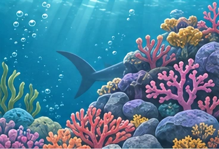
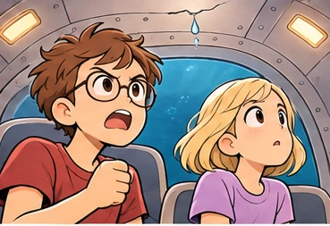
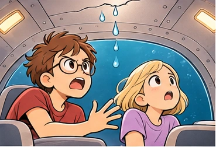

Chapter 7 · Part 1 — Remain Calm
The shark swam behind the .
“Where did it go?” said Annie, peering out the window.

“It doesn’t matter,” said Jack. “We have to get to the top.”

“More water’s coming in,” said Annie.
“Yeah, I know. Come on … come on … faster!” Jack ordered the .

“Even more water’s coming in,” said Annie, “lots more!”
Jack looked up. The water wasn’t dripping now—it was spurting.
“A few seconds, a few seconds,” said Jack.
Suddenly, the burst out of the water. It bobbed on the waves like a cork. The sparkled all around it.
“Safe!” shouted Annie.
Jack felt the water rising around his bare feet.
“Uh—not really … ” he said.
“Oops,” said Annie. “The must have made cracks in the bottom, too.”
The water was up to their ankles now.
Jack looked out. He saw the in the distance.
“The sub can make it. It doesn’t look that far,” he said.
“Go, go, go,” said Annie.
She pressed one of the steering keys.
Suddenly, the screen went blank.
“What’s happening?” said Jack.
Annie pressed the key again. Then Jack pressed the other pictures. Nothing happened.
“It’s dead,” said Annie.
“Oh, great,” said Jack.
Now the water was up to their knees.
“I guess we’ll have to swim,” said Jack. He took a deep .
“Right,” said Annie. “It’s a good thing we had swimming lessons this summer.”
“Right,” said Jack. “And it’s a bad thing we just saw a shark.”
Jack quickly found the picture of the shark in the book.
He read aloud:
If you ever see a shark in the water, don’t splash. Swim calmly away.
Jack closed the book.
“We better do the breast stroke,” said Annie. “So we won’t splash.”
“Yep, and stay close,” said Jack.
“Very close,” said Annie. Her eyes were wide. But she seemed very .
Jack took a deep . He tried to be , too. He calmly took off his glasses. He calmly put them and the book into his pack. He calmly put his pack on his back.
Annie opened the .
“Be ,” Annie said. She slipped out of the .
“Help,” Jack said calmly. He held his nose.
Then he calmly lowered himself into the .